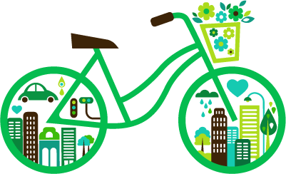

Ventajas para el cuidado del medio ambiente
Una ciudad con alta circulación de bicicletas por sus calles es, definitivamente, una ciudad amigable con el medio ambiente, pues lo ayuda a reducir los niveles de contaminación ambiental y sus niveles de monóxido y dióxido de carbono, hidrocarburos y otras partículas que favorecen la contaminación del aire.
Ventajas para el cuidado de la economía familiar
Al usar la bicicleta, también estarás ahorrando muchísimo dinero, pues no gastarías en impuestos, gasolina, parqueaderos, peajes, gastos de mantenimiento, pago de pasajes de servicio de transporte público, etc.
Cuidados
Si ya decidiste usar tu bicicleta para tus desplazamientos diarios, debes tomar algunas precauciones para que tus viajes sean seguros.


 1
1